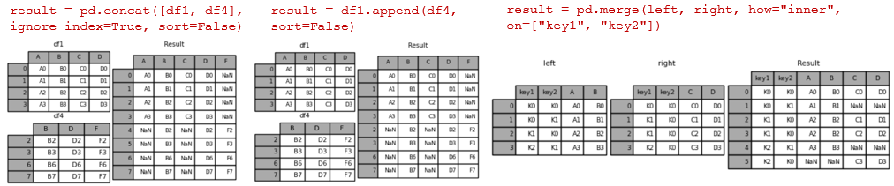

Statistics
Contents
Statistics#
Questions#
Problem: JOIN Dataframes
Can you tell me the ways in which 2 pandas data frames can be joined?
Solution:
A very high level difference is that merge() is used to combine two (or more) dataframes on the basis of values of common columns (indices can also be used, use left_index=True and/or right_index=True), and concat() is used to append one (or more) dataframes one below the other (or sideways, depending on whether the axis option is set to 0 or 1).
join() is used to merge 2 dataframes on the basis of the index; instead of using merge() with the option left_index=True we can use join().

Problem: [GOOGLE] Normal Distribution
Write a function to generate N samples from a normal distribution and plot the histogram.
import numpy as np
import matplotlib.pyplot as plt
from scipy import stats
def normal_sample_generator(N):
# can be done using np.random.randn or stats.norm.rvs
#x = np.random.randn(N)
x = stats.norm.rvs(size=N)
num_bins = 20
plt.hist(x, bins=num_bins, facecolor='blue', alpha=0.5)
y = np.linspace(-4, 4, N)
bin_width = (x.max() - x.min()) / num_bins
plt.plot(y, stats.norm.pdf(y) * N * bin_width)
plt.show()
normal_sample_generator(10000)

Problem: [UBER] Bernoulli trial generator
Given a random Bernoulli trial generator, write a function to return a value sampled from a normal distribution.
# *Solution recieved from the community via [merge request](https://github.com/dipranjan/dsinterviewqns/pull/5)*
import numpy as np
import pandas as pd
import matplotlib.pyplot as plt
# straightforward using the central limit theorem.
p = .5
n = 10000
# returns standard normal output via the central limit theorem
def standard_normal_output(p,n):
bernoulli_mean = p
bernoulli_variance = p*(1-p)
bernoulli_std = abs(np.sqrt(bernoulli_variance))
sample = np.random.binomial(size = n, n = 1, p = p)
return (sample.mean() - bernoulli_mean)/(bernoulli_std/np.sqrt(n))
# now we plot this output 10000 times to indeed show it is a standard normal distribution
def plot_output():
outputs=[]
for i in range(0,n):
outputs.append(standard_normal_output(p=p,n=n))
num_bins = 20
plt.hist(outputs, bins=num_bins, facecolor='blue', alpha=0.5)
plt.show()
plot_output()
Problem: [PINTEREST] Interquartile Distance
Given an array of unsorted random numbers (decimals) find the interquartile distance.
# Interquartile distance is the difference between first and third quartile
# first let's generate a list of random numbers
import random
import numpy as np
li = [round(random.uniform(33.33, 66.66), 2) for i in range(50)]
print(li)
qtl_1 = np.quantile(li,.25)
qtl_3 = np.quantile(li,.75)
print("Interquartile distance: ", qtl_1 - qtl_3)
[35.08, 50.02, 60.4, 51.82, 37.31, 40.69, 39.67, 45.21, 45.7, 34.52, 42.25, 42.06, 57.53, 45.21, 52.25, 66.18, 34.77, 53.83, 35.99, 33.68, 47.57, 51.62, 38.79, 58.53, 51.25, 61.53, 33.49, 64.59, 35.93, 36.07, 63.0, 46.17, 34.36, 50.61, 50.73, 34.07, 65.38, 59.51, 42.84, 62.86, 54.46, 54.87, 49.58, 65.68, 59.23, 65.94, 38.46, 59.21, 55.28, 55.94]
Interquartile distance: -19.269999999999996
Problem: [GENENTECH] Imputing the mdeian
Write a function cheese_median to impute the median price of the selected California cheeses in place of the missing values. You may assume at least one cheese is not missing its price.
Input:
import pandas as pd
cheeses = {"Name": ["Bohemian Goat", "Central Coast Bleu", "Cowgirl Mozzarella", "Cypress Grove Cheddar", "Oakdale Colby"], "Price" : [15.00, None, 30.00, None, 45.00]}
df_cheeses = pd.DataFrame(cheeses)
Name |
Price |
|---|---|
Bohemian Goat |
15.00 |
Central Coast Bleu |
30.00 |
Cowgirl Mozzarella |
30.00 |
Cypress Grove Cheddar |
30.00 |
Oakdale Colby |
45.00 |
import pandas as pd
cheeses = {"Name": ["Bohemian Goat", "Central Coast Bleu", "Cowgirl Mozzarella", "Cypress Grove Cheddar", "Oakdale Colby"], "Price" : [15.00, None, 30.00, None, 45.00]}
df_cheeses = pd.DataFrame(cheeses)
df_cheeses['Price'] = df_cheeses['Price'].fillna(df_cheeses['Price'].median())
df_cheeses.head()
| Name | Price | |
|---|---|---|
| 0 | Bohemian Goat | 15.0 |
| 1 | Central Coast Bleu | 30.0 |
| 2 | Cowgirl Mozzarella | 30.0 |
| 3 | Cypress Grove Cheddar | 30.0 |
| 4 | Oakdale Colby | 45.0 |